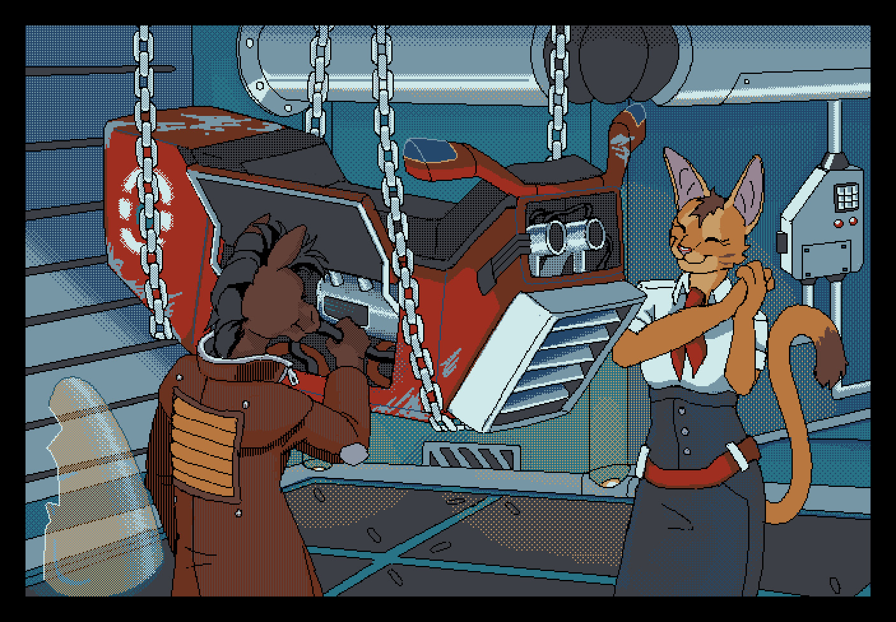
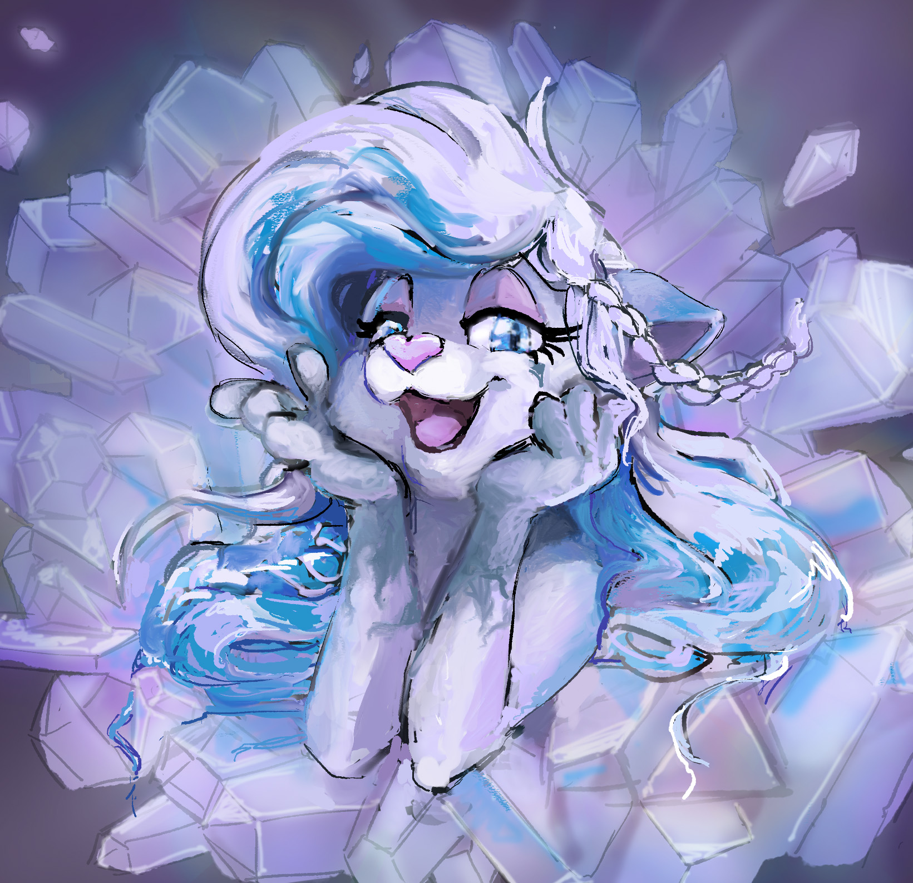
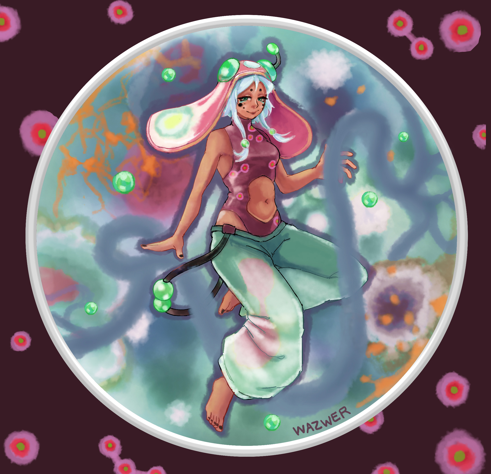
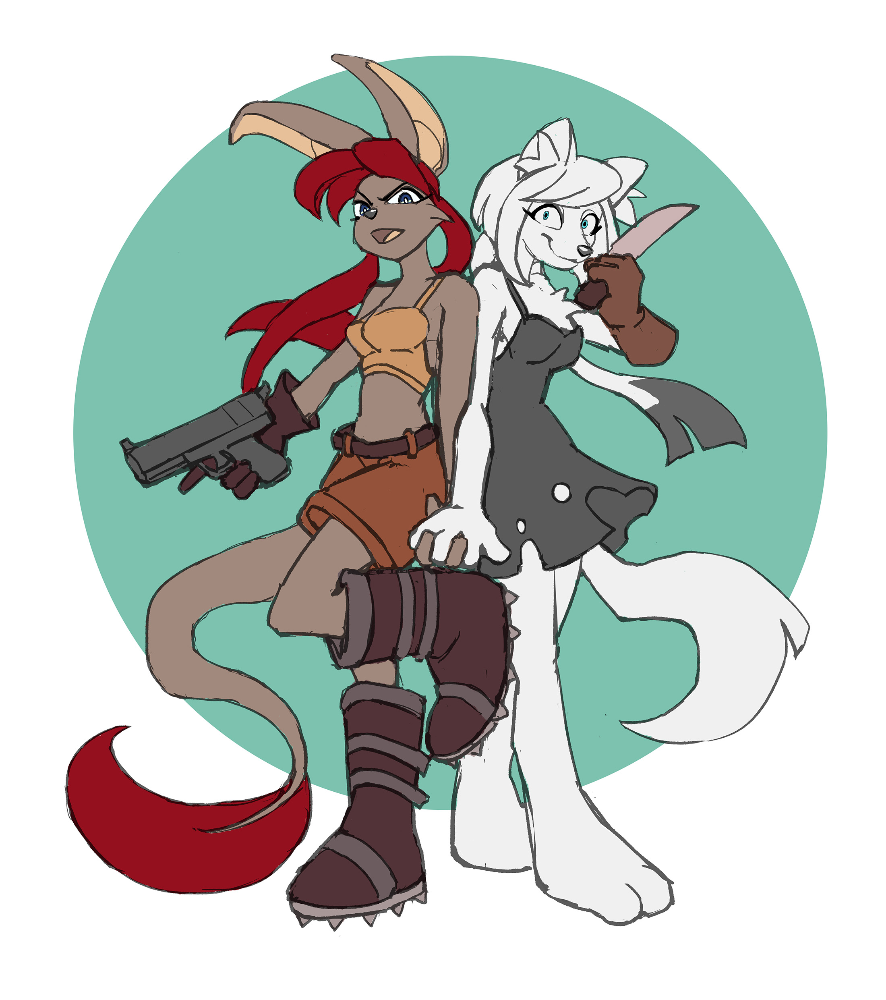

This is a small selection of fan art I've made over the years :) You
can click on a thumbnail to view the larger image
2025 - A pixel art piece I made for McArthur of their OCs
on
Artfight.

2024 - Looping gif I made of Nicole from Archie sonic. The gif itself is pretty huge to host here so
I'm
just linking out to a video I made of it (warning there is ambient audio).
2024 - A rendered piece I made for HoloLynx on Artfight.

2026 - fan art of Diffsinger SPORE a voicebank created by Knoxstation. Her design is really cool!

2025 - A piece I made for TibetSunaTsune of their
OCs
on Artfight. I like how the poses turned out :D

2024 - A clean sketch I made for Aeroxoxo of their OCs
on
Artfight. I like the design of this pair.